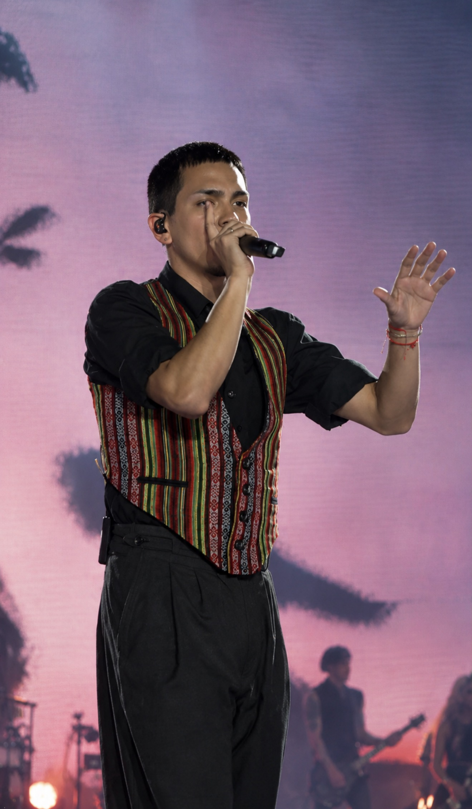
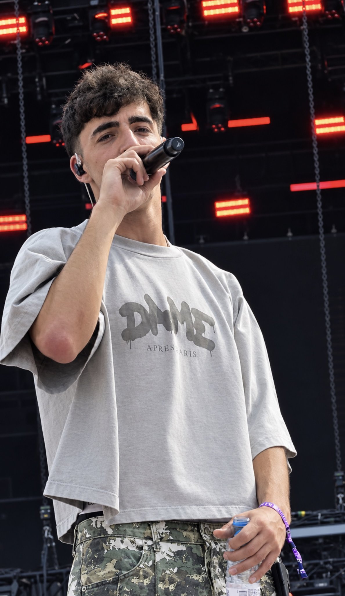
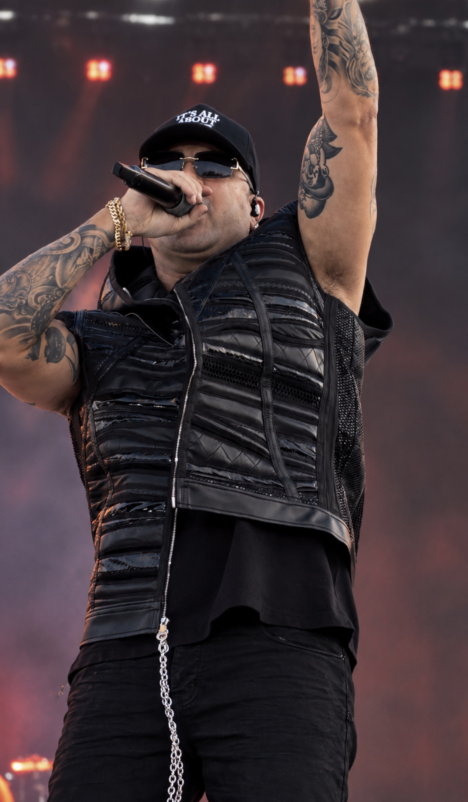
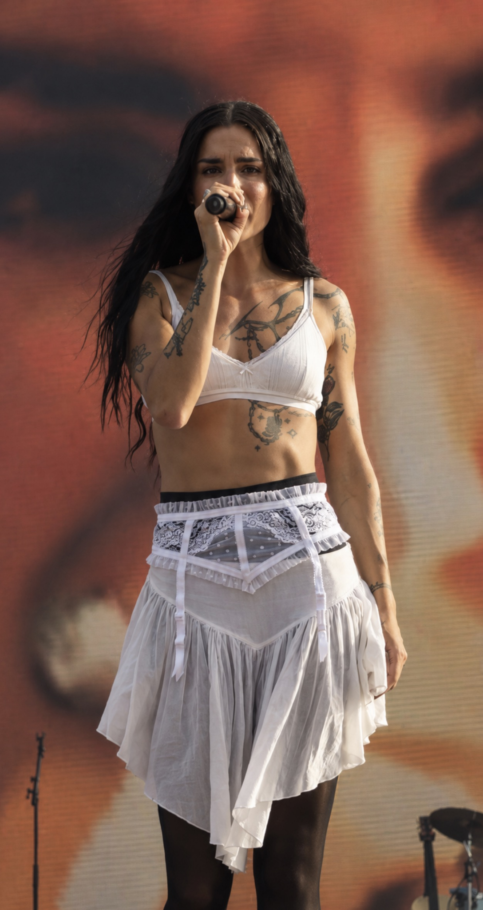
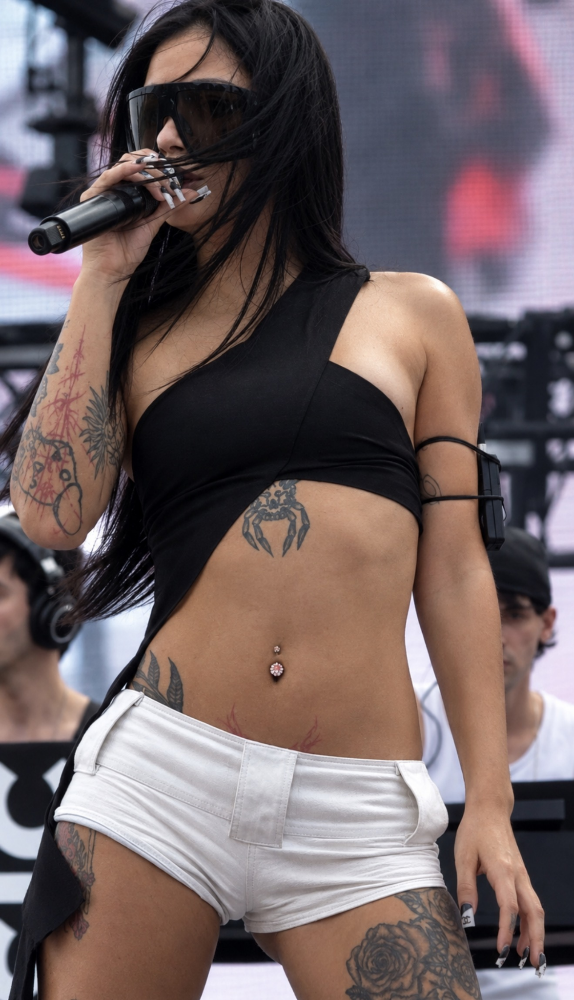
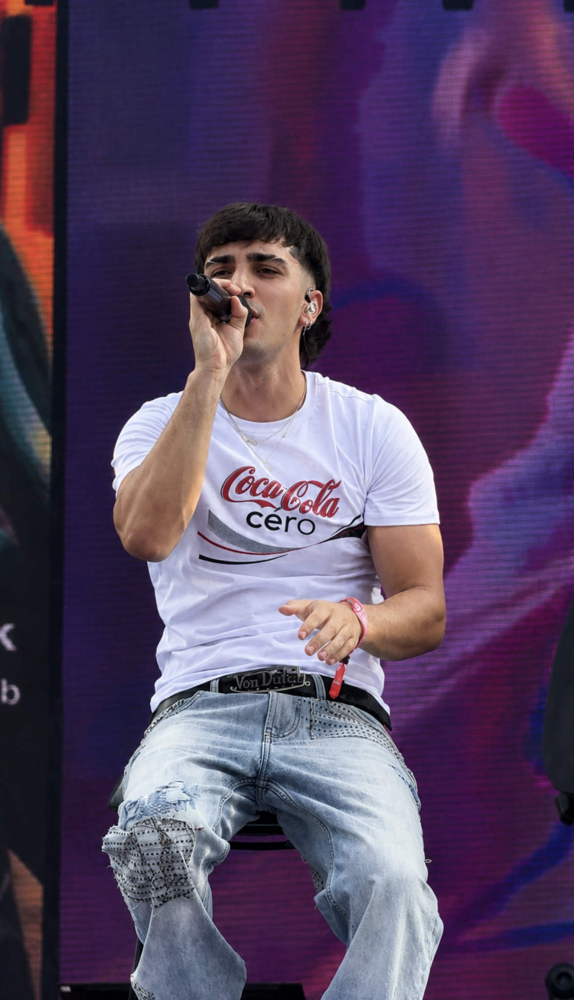
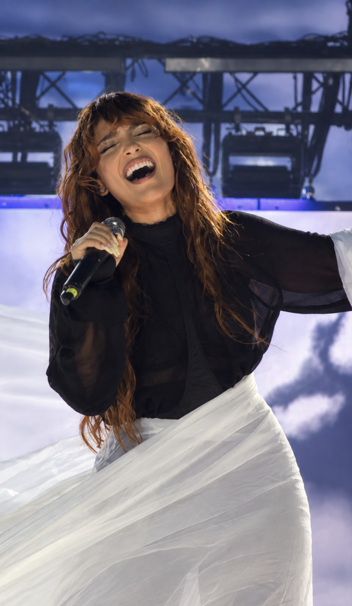
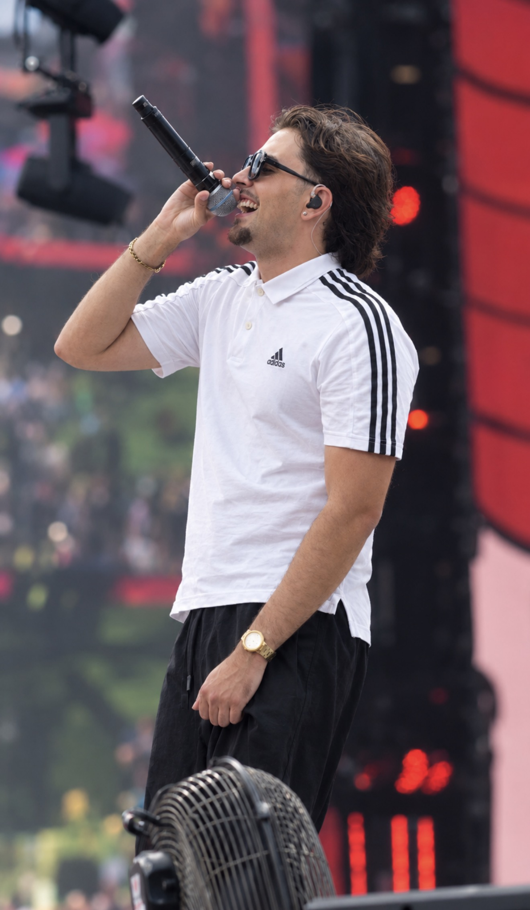

Una jornada marcada por la música en directo
El Coca-Cola Music Experience 2026 reunió sobre sus escenarios a una selección de artistas de diferentes estilos y generaciones. Desde propuestas urbanas hasta sonidos pop y alternativos, el festival volvió a convertir la música en directo en el centro de la experiencia.
Desde Ultimatum Magazine hemos querido recoger parte de esa energía con una selección de fotografías tomadas durante las actuaciones. Una mirada directa al escenario, a los artistas y a algunos de los momentos que definieron nuestra cobertura.
Artistas y momentos destacados
En nuestra galería aparecen Milo J, Dib, Wisin, Natalia Lacunza, Taichu, CeroTkm, Violeta Hódar y Pikeras, protagonistas de diferentes momentos de la cobertura.








La experiencia Ultimatum Magazine
Nuestra apuesta es seguir acercando conciertos, festivales, cultura y entretenimiento desde una perspectiva visual y cercana. Esta cobertura forma parte de nuestro compromiso por contar lo que sucede sobre los escenarios y dar espacio a los artistas que construyen la escena musical actual.